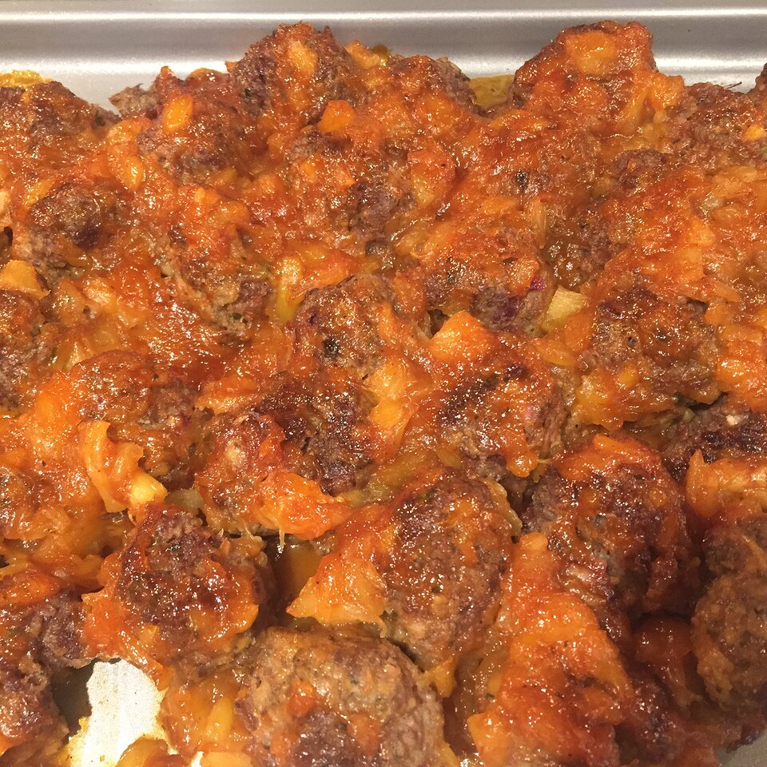

Manhattan Meatballs

Description
Per Serving: 300 calories; protein 14.5g; carbohydrates 43.2g; fat 7.6g; cholesterol 65.1mg; sodium 598.6mg.
Ingredients
- 2 pounds extra lean ground beef
- 2 cups dry bread crumbs
- 2 eggs
- ½ cup minced onion
- 2 tablespoons chopped fresh parsley
- 2 teaspoons salt
- 1 cup barbecue sauce
- 1 ½ (16 ounce) jars pineapple preserves
Steps
- Preheat oven to 350 degrees F (175 degrees C).
- In a medium-size mixing bowl, mix barbecue sauce and pineapple preserves together.
- In a medium-size mixing bowl, combine meat, breadcrumbs, eggs, onions, salt, and parsley.
- Mix well and form into bite-size balls.
- Arrange the balls in a single layer in a 9x13 inch baking dish.
- Pour the barbecue sauce mixture evenly over the meatballs.
- Bake for 30 to 45 minutes, until the meat is cooked
Return to homepage